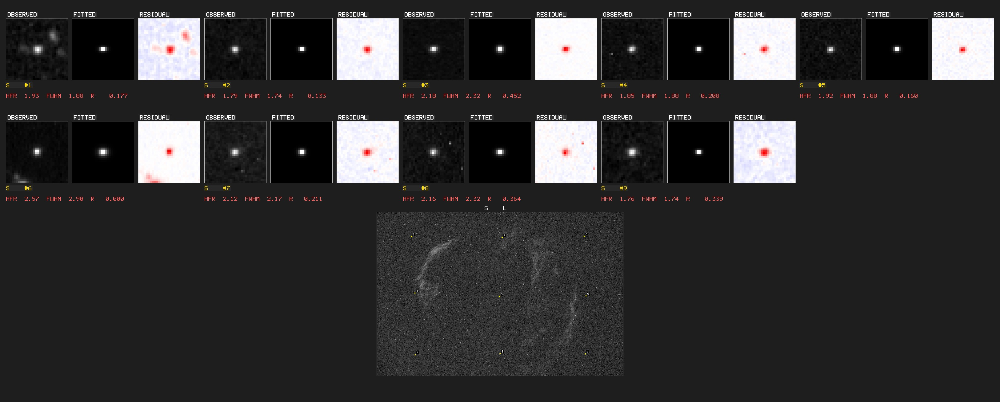

CLI Reference
Every psf-guard command: serve the UI, import image folders,
screen frames, export, sync, manage users, and analyze single files. The
desktop app needs none of them.
psf-guard --help lists the commands; psf-guard <command> --help lists a command's options.
Commands
| Command | Does |
|---|---|
server | Serve the grader UI, the REST API and the MCP endpoint |
create-db | Create a Target Scheduler database and import image folders into it |
import | Import image folders into an existing database |
remove-imported | Remove the projects an import created |
screen-fits | Screen frames for occlusion, clouds, pointing and satellite risk |
export | Copy graded lights and matched calibration frames into a stacking folder |
astrobin-csv | Write AstroBin's acquisition CSV for a project or target |
stack-snr | Measure how a stack's SNR grows with depth, from a folder |
move-rejects | Move rejected frames out of the stacking tree |
restore-rejects | Bring archived rejects back |
filter-rejected | Legacy reject mover with statistical flags |
sync pull, planning, grades, remote | Copy captures, plans or grades between two databases or two servers |
users | Manage browser users and API tokens |
sky-maps install, list | Install N.I.N.A.'s offline sky maps for framing |
fill-guids | Give Target Scheduler rows without a GUID a new one |
list-projects, list-targets | List a database's projects, or a project's targets |
dump-grading | Print grading results |
show-images | Show images by ID |
update-grade | Set one image's grade |
regrade | Regrade by statistical analysis |
analyze-fits | Detect stars and compare with the database's values |
annotate-stars | Write a PNG with detected stars marked |
visualize-psf, visualize-psf-multi | Show PSF fit residuals for one star or a grid |
benchmark-psf | Time PSF fitting |
benchmark-detection | Benchmark HocusFocus star detection over a frame manifest |
stretch-to-png | Convert a FITS file to a stretched PNG |
read-fits | Print FITS metadata |
Commands that open a catalog take a registry slug or a .sqlite
path, and --registry names a registry other than the default.
The older database commands instead read the global -d option,
which goes before the command name and defaults to
schedulerdb.sqlite: psf-guard -d my.sqlite
list-projects.
Serve the grader UI
# Serve; the database is registered on first run and reused afterwards
psf-guard server <database> <image-dirs...> [--port 3000]
# Serve every database in the registry
psf-guard server
# Server settings from a TOML file
psf-guard server --config psf-guard.toml
# A throwaway session that leaves your real registry alone
psf-guard server --registry /tmp/scratch.json <db> <dirs...>
# Listen on localhost only (the default is 0.0.0.0)
psf-guard server --host 127.0.0.1 <db> <dirs...>| Option | Does |
|---|---|
--config, -c | Read the server's TOML file |
--registry | Use another database registry |
--port, -p; --host | Where to listen |
--cache-dir | Cache folder |
--stack-dir | Folder for stacks; default Settings, else the cache |
--calibration-dir | Folder for calibration masters; default Settings, else the cache |
--pregenerate-screen, --pregenerate-large, --pregenerate-original, --pregenerate-annotated, --pregenerate-all | Make those previews in the background |
--cache-expiry | How long pre-generated previews last (default 1y) |
--allow-database-management | Allow database, catalog and path changes from the browser. On a network address it also needs an account. |
--director-meta | Keep the planning store at another path; needs --allow-database-management |
--allow-anonymous-access | Serve a network address with no accounts, open to everyone |
--static-dir | Serve the frontend from a folder instead of the built-in copy |
The server looks for each frame in its image folders in order and uses the first match. It serves every database in the registry, not only the one on the command line. See Configuration & API, Server Accounts and Storage & Performance.
Import image folders
# Create and register a catalog from image folders
psf-guard create-db archive.sqlite ./lights ./more-lights --name "Archive"
# Preview, then import lights and calibration frames
psf-guard import archive ./new-frames --dry-run
psf-guard import archive ./new-frames
# One frame kind only
psf-guard import archive ./new-lights --lights-only
psf-guard import archive ./new-flats --calibration-only
# Leave out integration masters and other processing output
psf-guard import archive ./processing-tree --skip-processed
# Take frames from a rig this catalog has not recorded
psf-guard import archive ./new-camera --accept-other-rigs
# Preview removing the projects an import made
psf-guard remove-imported archive --dry-runThe first pass reads headers only. Lights arrive as Pending frames and
build projects, targets, shared exposure templates and plans. Bias, dark,
dark-flat and flat frames go to the calibration library, not Target
Scheduler's image table. New frames attach to an existing target by name or
coordinates (--match-radius-deg) unless you pass
--no-attach. Calibrated and registered copies from WBPP, Siril,
ASTAP or DeepSkyStacker pair with the light they came from;
--no-pairing imports them as lights instead.
--lights-onlyand--calibration-onlyexclude each other;--skip-processedworks with either.--time-gap-dayssets the gap between a rig's frames that starts a new project.--profile-idpicks the Target Scheduler profile.create-dbregisters the new database unless you pass--no-register.- The scanner reads
.fits,.fit,.ftsand monolithic.xisffiles.
See Import Images.
Screen frames
psf-guard screen-fits ./lights # a verdict per frame
psf-guard screen-fits ./lights --annotate ./diag # diagnostic PNGs
psf-guard screen-fits ./lights --regrade-db my-db --dry-run
psf-guard screen-fits ./lights --format json # or table, csvscreen-fits needs no database for spatial and photometric
screening. With --regrade-db it reads target coordinates from
the catalog, plate-solves each frame with Seiza, adds cached satellite risk,
and writes supported rejections. Satellite predictions only warn; a
rejection needs a matching bright trail in the pixels.
| Option | Does |
|---|---|
--min-score | Reject below this quality score (default 0.35) |
--dead-cell-rise | Rise in dead cells over the baseline that flags occlusion (default 0.08) |
--max-hfr, --min-stars | Hard limits, as in N.I.N.A.'s subframe selection; off by default |
--ignore-satellites | Keep satellite trails as warnings only |
--session-gap | Minutes that split a night into sequences (default 60) |
--threads | Worker threads (default: all cores, within memory) |
--cache-dir | The server's cache, for orbital elements and predictions |
See Quality Screening, Astrometry Quality and Satellite Tracks.
Export for stacking
# Preview, then copy Accepted lights into <target>/LIGHT/<filter>/
psf-guard export my-db --dest ./stacking --dry-run
psf-guard export my-db --dest ./stacking
# One target and filter, hardlinked where possible
psf-guard export my-db --dest ./stacking \
--target "California Nebula" --filter HA --link
# A WBPP tree that names the frames where they are
psf-guard export my-db --dest ./wbpp --layout wbpp --placement reference \
--wbpp-drizzle 2xRejects are never exported; --include-pending adds ungraded
frames. Re-runs skip files already there.
| Option | Values |
|---|---|
--layout | standard (by target) or wbpp (one root per frame type) |
--placement | copy, hardlink, reflink, symlink, or reference (place nothing; the WBPP runner names the originals). --link is hardlink. |
--local-root, --remote-root | With reference: the frames' folder as this machine and as the PixInsight machine see it |
--wbpp-quality | maximum, good, fast |
--wbpp-fast-integration | off (default), auto, on |
--wbpp-drizzle | off, 2x, 3x |
--wbpp-autocrop | true or false |
--wbpp-rejection | percentile-clip, winsorized-sigma, linear-fit, esd, rcr, auto |
See Export & AstroBin and WBPP Runs.
AstroBin acquisition CSV
psf-guard astrobin-csv my-db --project-id 2 -o acquisitions.csv
psf-guard astrobin-csv my-db --target-id 42 --detail full --filter-id Ha=1234One row per night, filter and exposure length. essentials
(the default) writes date, filter, count and duration; full adds
binning, gain, sensor and ambient temperature, the f-number, and the
calibration frames the library matches. --filter-id NAME=ID
gives a filter its AstroBin ID, over the registry's settings.
Measure stack depth from a folder
# A folder in capture order
psf-guard stack-snr ./lights
# Strongest frames first, and save the curve
psf-guard stack-snr ./lights --order quality --csv curve.csv --json curve.json
# Weight each frame by its noise
psf-guard stack-snr ./lights --weight-by-noisestack-snr searches folders for FITS and XISF files, stacks
them raw, and measures SNR at each depth. Capture order asks whether another
night would help; quality order ranks frames by stars and sharpness and asks
which are worth keeping. --weight-by-noise weighs each frame by
its inverse noise variance, relative to the first frame, as the stacking
method's By noise does, and prints each weight.
--threads caps star detection threads. A curve needs three
frames or more. See Stacks.
Archive rejected files
psf-guard move-rejects --db <slug> [--dry-run] [--project NAME] [--target NAME]
psf-guard restore-rejects --db <slug> [--all] [--image-id N] [--guid GUID] [--dry-run]move-rejects also takes --reject-segment,
--reject-depth and --sidecar-exts. See
Rejects & Sync.
Sync two catalogs
psf-guard sync pull --from telescope.sqlite --to my-db
psf-guard sync planning --from my-db --to telescope.sqlite
psf-guard sync grades --from my-db --to telescope.sqlite
# With another PSF Guard over HTTP
psf-guard sync remote --direction pull --local my-db \
--peer https://telescope.example:3000 --token-file key.txtSee Rejects & Sync.
Manage users and API tokens
psf-guard users add editor --role read-write [--email ...] [--password-file PATH] [--replace]
psf-guard users add viewer --role read-only
psf-guard users list
psf-guard users remove viewer [--allow-empty]
psf-guard users token create editor --label "claude on laptop" [--read-only] [--expires-days 90]
psf-guard users token list [--user editor]
psf-guard users token revoke <id>Without --password-file, users add asks for the
password twice. token create prints the token once. Each
command takes --registry; restart the server after a change.
See Server Accounts and
MCP for Agents.
Install offline sky maps
psf-guard sky-maps install full --cache-dir /path/to/cache
psf-guard sky-maps install nsns-ohs --cache-dir /path/to/cache
psf-guard sky-maps install nsns-ohs-starless --cache-dir /path/to/cache
psf-guard sky-maps list --cache-dir /path/to/cachefull is N.I.N.A.'s whole-sky DSS set (3.3 GB),
nsns-ohs the Northern Sky Narrowband Survey in SHO colour
(1.4 GB), and nsns-ohs-starless its starless version (0.5 GB).
Any other value is taken as a zip URL. Pass the cache the server uses; the
default is ./cache. See
Configuration & API.
Detect stars and analyze PSFs
# Detect stars and compare with the database's values
psf-guard analyze-fits image.fits [--detector nina|hocusfocus] [--compare-all]
# Annotated star map
psf-guard annotate-stars image.fits [--max-stars 50]
# PSF fit residuals: one star, or a grid
psf-guard visualize-psf image.fits [--star-index N]
psf-guard visualize-psf-multi image.fits [--num-stars 25]
# Timing
psf-guard benchmark-psf image.fits
psf-guard benchmark-detection manifest.json --output benchmark-detection.csv
visualize-psf-multi draws observed, fitted and
residual grids with Moffat and Gaussian models.These commands read XISF files too. annotate-stars labels
each star with its HFR; --max-stars sets how many.
benchmark-detection records star count, HFR and time per frame
from a JSON manifest, and agreement with N.I.N.A.'s values where the manifest
has them.
FITS utilities
psf-guard stretch-to-png image.fits -o output.png # MTF auto-stretch
psf-guard read-fits image.fits [-v] # header and metadataQuery databases and grade by hand
psf-guard -d database.sqlite list-projects
psf-guard -d database.sqlite list-targets "Project Name"
psf-guard -d database.sqlite dump-grading [--status rejected] [--project NAME] [--format csv]
psf-guard -d database.sqlite show-images 12,13,14
psf-guard -d database.sqlite update-grade 123 rejected --reason "Clouds"
psf-guard -d database.sqlite fill-guids [--dry-run]
psf-guard regrade database.sqlite [--dry-run] [--days 90] # statistical regradefill-guids gives Target Scheduler rows that lack a GUID a new
one, after copying the database beside itself. Close N.I.N.A. on that rig
first. See Configuration.
regrade and filter-rejected take statistical
outlier flags: --enable-statistical with
--stat-hfr, --stat-stars,
--stat-distribution and --stat-clouds, for HFR and
star-count outliers per target and filter and for cloud onsets in a
sequence. See
docs/STATISTICAL_GRADING.md.